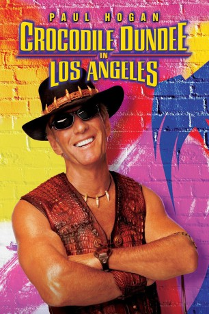
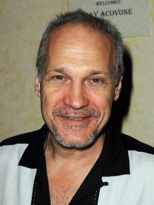
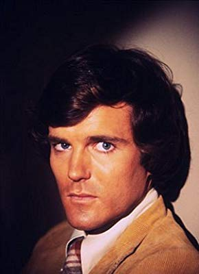
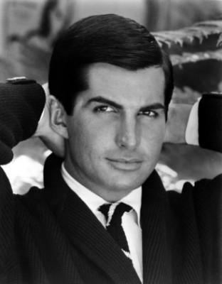

#1526 Crocodile Dundee 3 - in Los Angeles
 gesehen am 22.07.2015
gesehen am 22.07.2015
 
 IMDB-Wertung: 4.8 / 10
IMDB-Wertung: 4.8 / 10  Metascore: 37
Metascore: 37 
Der berühmt-berüchtigte Krokodiljäger Mick Dundee und dessen Freundin Sue führen mit ihrem gemeinsamen Sohn ein "beschauliches" Leben im australischen Outback. Da erreicht sie eines Tages ein Anruf von Sues Vater, der in Los Angeles als Zeitungsverleger arbeitet. Dieser bittet seine Journalisten-Tochter in die Stadt der Engel zu kommen, um der Story eines jüngst verstorbenen Kollegen nachzugehen. Sue beginnt, die dubiosen Geschäfte eines zwielichtigen Studiochefs zu recherchieren - was sich bald als überaus gefährlich herausstellt...
Jahr: 2001
Dauer: 92 Minuten
FSK: 6
Land: Australien Studio: Constantin FilmTonspuren:
Untertitel:
Auflösung: 720p (1280x688) Größe: 4474 MB
Genre: Komödie, Abenteuer
Regisseur:  Simon Wincer
Simon Wincer
Drehbuch: Paul Hogan, Matt Berry, Eric Abrams
Soundtrack: Basil Poledouris
Darsteller:
 Paul Hogan als Michael J. 'Crocodile' Dundee
Paul Hogan als Michael J. 'Crocodile' Dundee- Linda Kozlowski als Sue Charleton
 Jere Burns als Arnan Rothman
Jere Burns als Arnan Rothman Jonathan Banks als Milos Drubnik
Jonathan Banks als Milos Drubnik Aida Turturro als Jean Ferraro
Aida Turturro als Jean Ferraro Paul Rodriguez als Diego
Paul Rodriguez als Diego- Kaitlin Hopkins als Miss Mathis
 Matt Winston als Limo Driver
Matt Winston als Limo Driver- Morgan O'Neill als Matt
- Clare Carey als Skater
- Brian Turk als Driver
- David Bickford als Driver
- Daryl Keith Roach als Cop
- Joe Michael Burke als Cop
- Angelo Perez als Valet
- Gerry Del Sol als Barman
- Keli Daniels als Didi
- Lenny Citrano als Actor
 Matthew Kimbrough als Producer
Matthew Kimbrough als Producer- Alex Kuzelicki als Lethal Agent
- Shanyn Asmar als Claire
- John Billingsley als Barry
-  Jay Acovone als Eric
- Chad S. Taylor als Juggler
- Buddy Daniels Friedman als Pickpocket
- Ty Hungerford als Trench Coat Man
- David Franklin als Assistant Director
- Steven Grives als Evil Barron
- Carey Embry als Cowgirl
- Mark Adair-Rios als Gang Banger
 Rick Gonzalez als Gang Banger
Rick Gonzalez als Gang Banger- Kenneth Ransom als Phil
-  Nicholas Hammond als Curator
- Ray Anthony als Thug
- Keir Beck als Thug
- Nick McKinless als Thug
- Nick Lawson als Thug
 Mike Tyson als Himself - Special Appearance
Mike Tyson als Himself - Special Appearance-  George Hamilton als Himself - Special Guest Appearance
- Louise Boothby als Bus Tourist , uncredited
- Erick Carrillo als Valet Guy , uncredited
- Ozzie Devrish als Villain , uncredited
- Ernie Dingo als Charlie , uncredited
- April Fitzsimmons als The Wendy's Girl , uncredited
- Elke Jeinsen als (uncredited
- Ronnie Marmo als Photographer , uncredited
- Joe Reith als Film Crew Member , uncredited
- Alec Wilson als Jacko
- Gerry Skilton als Nugget O'Cass
- Steve Rackman als Donk
Datei: X:\4-Tetralogie(A-K)\Crocodile Dundee\Crocodile Dundee 3 - in Los Angeles (2001, FSK6, 1280x688).mkv seit 14.07.2015
Festplatte: HD Collection-3(N-Z)-6(A-Z)
 Es gibt insgesamt 7 Filme in der Gruppe '4-Tetralogie(A-K)\Crocodile Dundee'
Es gibt insgesamt 7 Filme in der Gruppe '4-Tetralogie(A-K)\Crocodile Dundee'